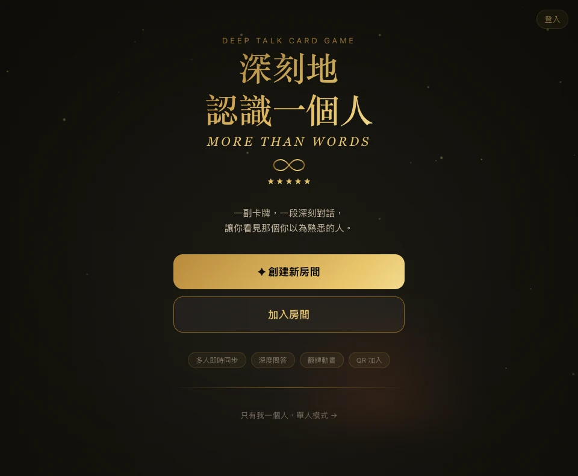

Project Summary
More Than Words (深刻地認識一個人) is a web-based conversation game. Players draw Mandarin prompt cards, with English translations available on the cards. The deck moves from group icebreakers and light questions to personal stories and closing reflections.

How It Works
Play Together or Solo
Host a room and invite others with a room code, share link, or QR code. Supabase Realtime keeps the current card, turns, and reactions synchronized across players' devices. Solo mode uses the same deck for individual reflection.
Choose the Pace
Guided play progresses from lighter to deeper prompts, free draw mixes the deck, and level selection lets players choose the depth of the next card. A session recap shows how many cards the group drew and the deepest level it reached.
Technology Stack
- Next.js
- TypeScript
- Supabase Realtime
- Tailwind CSS
- Framer Motion